侧旋篇
Bilibili 原课 · 叶修鸽哥 · 合集第 31/35 集 · 时长 07:12 · 整理日期 2026-11-06 · 发布日期 2026-01-01
课程总结
本课以高位自抛球入门，从击球位置与离拍方向理解侧旋，再加入转动、距离和高度变化。后段把相似球路带到隔网喂球、放小球、反手切削和发球。
技术总结
- 从球的相对位置和离拍方向理解侧旋路径。
- 先在高位自抛球练滑动感，再加入身体转动。
- 可以先增加距离，再降低处理高度。
- 用中场斜线和侧身线路练球路选择。
- 放小球时分开体验卸力、向下割和加入左右方向。
训练路线
- 先在高位自抛球找侧向路径，再配合身体转动。
- 在中场练斜线和侧身线路，逐步拉长距离并降低球高。
- 转入隔网喂球，练不同落点和上升阶段处理。
- 对比放小球、反手切削和发球中的相似拍路。
常见问题与调整
| 情况 | 调整方式 |
|---|---|
| 低位处理时只靠手臂横挤 | 提高来球位置，找回挥拍空间后再逐步降低。 |
| 一降低击球高度就难以控制 | 先在较高位置把方向和距离做稳。 |
按时间顺序的课程记录
00:00—00:18：侧旋不限于“滑板”
讲师在新年问候后引入侧旋，说明本集会讲到通常被称为“滑板”的处理，但侧旋并不只存在于这一项技术。他希望把不同击球中类似的处理方式串起来。
00:18—00:56：从球的相对位置理解离拍方向
讲师先完成一次常规正手带球示范，称这种通常会被叫作上旋。接着把球作为参照，用球拍和持球手说明他所说的“从球的左边离开”。这里的“左边”保留讲师原有观察参照，不擅自转换成所有镜头、左右手和线路通用的方向规定。
他明确否定低位只靠横向挤一下的做法，称那是挤出来的滑板。随后表示高位较容易入门，低位也可以处理，并把局部拍路与前面正手课程的内圈延伸联系起来。持球指方向的讲解只记文字；实际短促推拍反例和空挥分别截取。
动作01：开场常规正手带球对比｜带球击球｜00:19.000—00:21.300
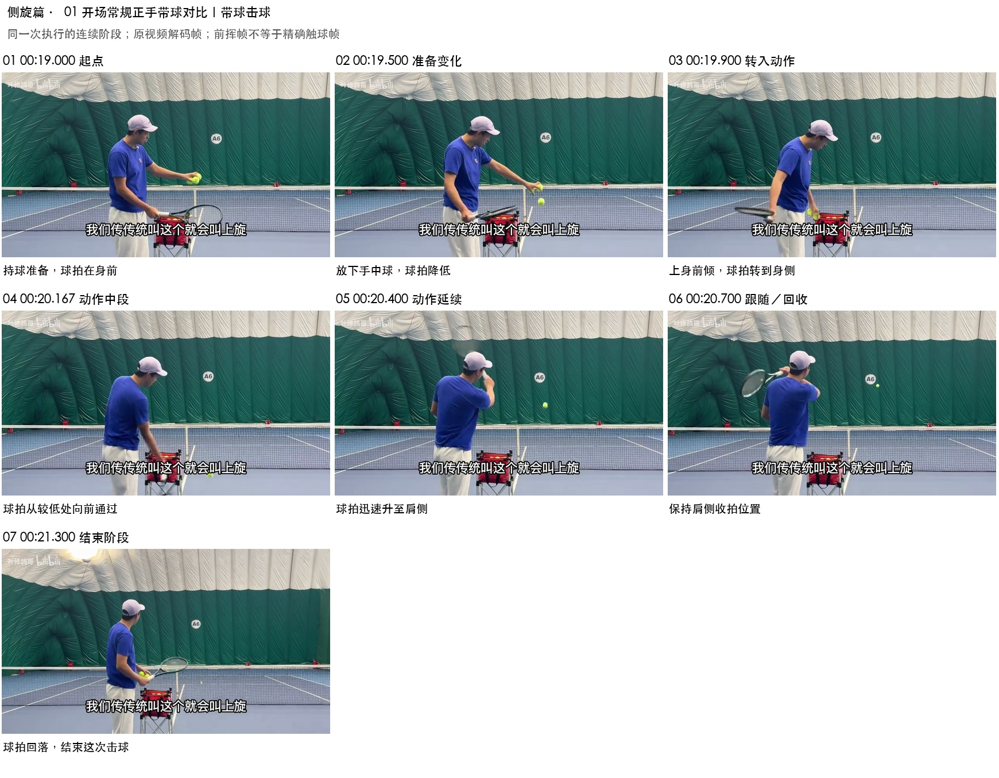
可见过程：持球准备，球拍在身前 → 上身前倾，球拍转到身侧 → 球拍迅速升至肩侧 → 球拍回落，结束这次击球。
动作02：低位横挤的反例｜局部对比空挥｜00:34.267—00:35.267
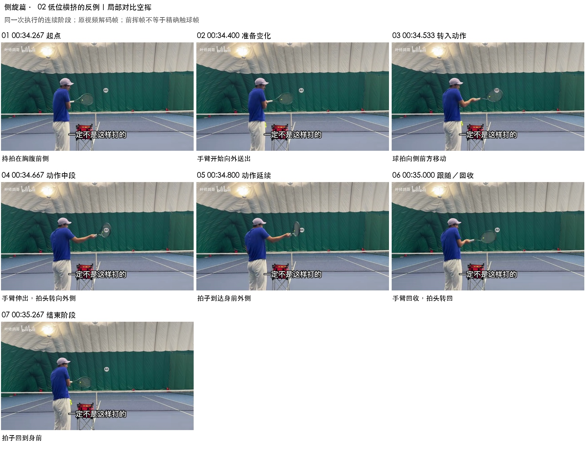
可见过程：持拍在胸腹前侧 → 球拍向侧前方移动 → 拍子到达身前外侧 → 拍子回到身前。
动作03：内圈延伸的局部空挥｜局部空挥｜00:52.000—00:53.433
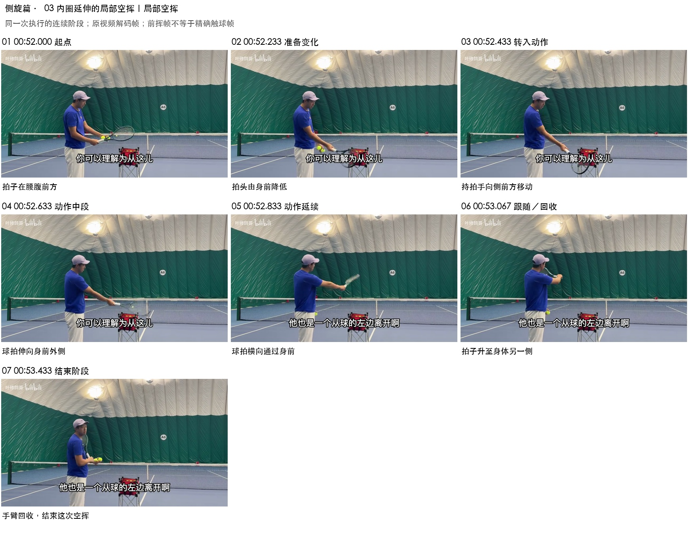
可见过程：拍子在腰腹前方 → 持拍手向侧前方移动 → 球拍横向通过身前 → 手臂回收，结束这次空挥。
00:56—01:14：第一步，先练高位自抛球的滑动感觉
讲师让持拍位置高一些，自己抛球，先找“滑”的感觉。最初不要求身体做很大动作，先感受手臂从高位向左侧经过。他连续做了三次自抛球击球；第三次在讲解同一提示时仍有实际抛球与击球，不能归为空挥。
这一阶段的重点是先把局部拍路做出来，而不是马上把完整身体动作、速度和不同站位都加进去。
动作04：高位自抛球第一拍｜自抛球击球｜00:59.700—01:02.500
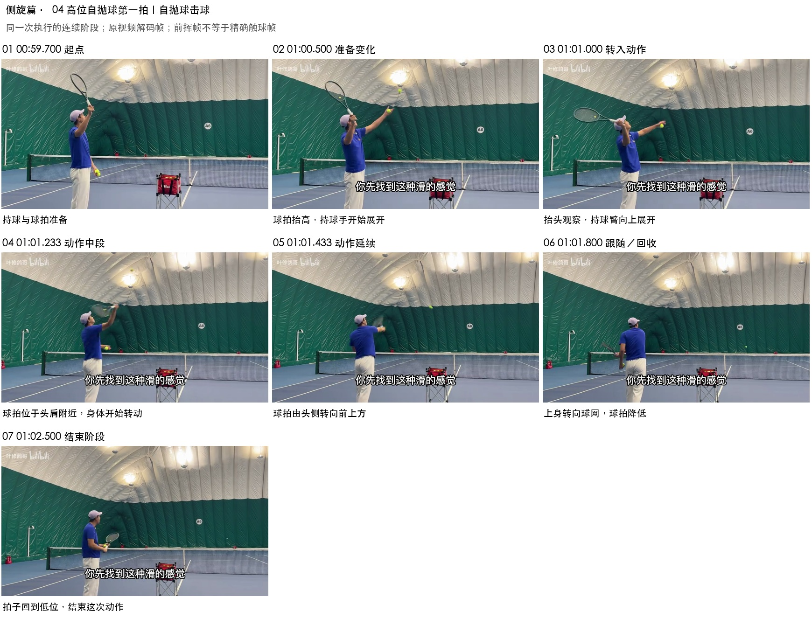
可见过程：持球与球拍准备 → 抬头观察，持球臂向上展开 → 球拍由头侧转向前上方 → 拍子回到低位，结束这次动作。
动作05：身体少动的高位自抛球｜自抛球击球｜01:05.500—01:08.400
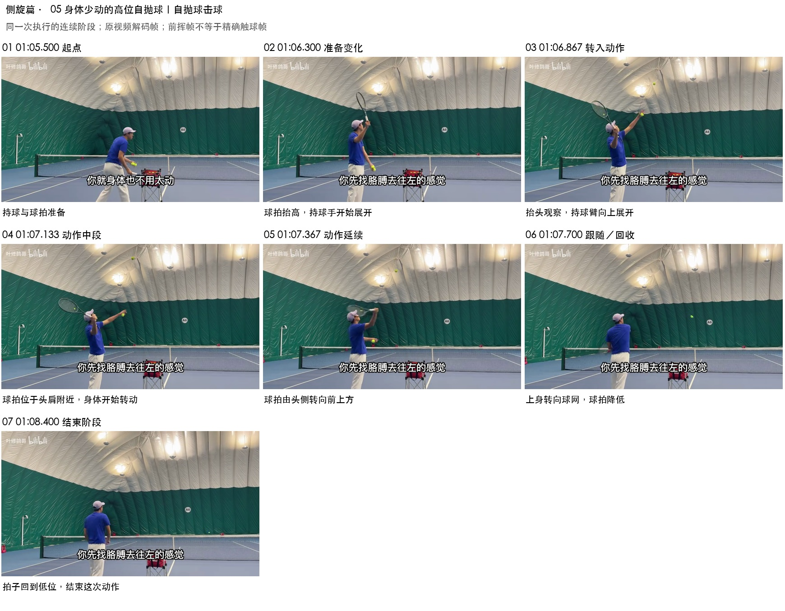
可见过程：持球与球拍准备 → 抬头观察，持球臂向上展开 → 球拍由头侧转向前上方 → 拍子回到低位，结束这次动作。
动作06：向左滑动的第三次自抛球｜自抛球击球｜01:08.700—01:10.700
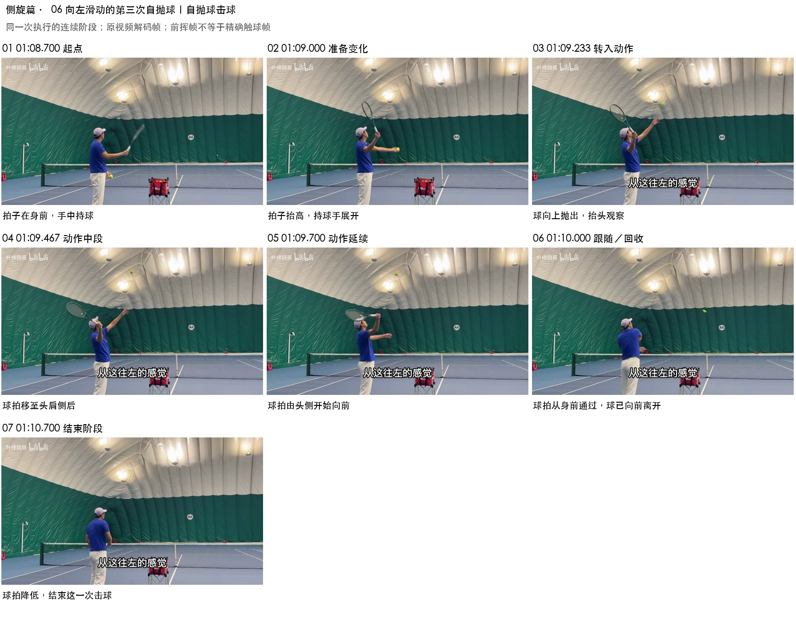
可见过程：拍子在身前，手中持球 → 球向上抛出，抬头观察 → 球拍由头侧开始向前 → 球拍降低，结束这一次击球。
01:14—01:58：再加入身体转动，随高度改变姿态
下一步，讲师加入他称为“胸椎转动”的部分。他先用较直立姿态说明转动，再前倾身体，演示低位的两次局部转动；随后在较直立位置转动一次，再展示高位展开后的挥拍。
他的解释是：屈髋程度不同，身体转动所处的方向也会改变；低球时前倾更多，高位滑板时会更挺胸、展开一些。虽然动作看起来像向左发力，他想强调的是把身体的力量加进去，而不只是把局部手臂加速。随后用两次自抛球示范这个衔接，并提示不必先追求很快。这里按课程记录他的体感与解释；静态帧只能显示前倾、转身与拍子升降，不能证明胸椎轴线或主动发力顺序。
动作07：屈髋后的低位转动一｜局部无球转动｜01:29.800—01:31.200
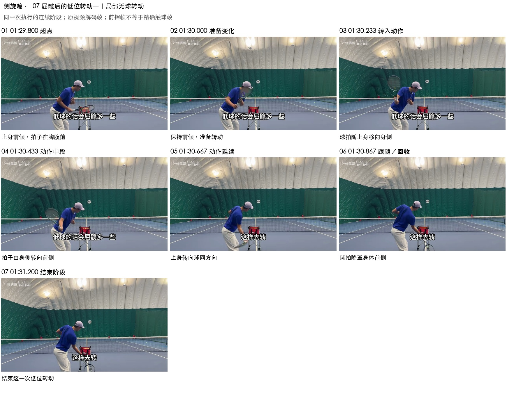
可见过程：上身前倾，拍子在胸腹前 → 球拍随上身移向身侧 → 上身转向球网方向 → 结束这一次低位转动。
动作08：屈髋后的低位转动二｜局部无球转动｜01:31.400—01:32.800
可见过程：上身仍前倾，拍子在身前 → 球拍移至侧后方 → 拍头由身侧降低 → 身体开始立起，结束局部转动。
动作09：较直立位置的转动｜局部无球转动｜01:33.167—01:34.400
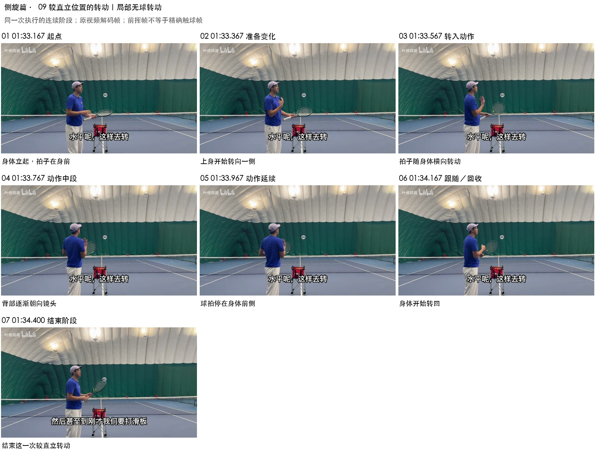
可见过程：身体立起，拍子在身前 → 拍子随身体横向转动 → 球拍停在身体前侧 → 结束这一次较直立转动。
动作10：高位展开后的转动｜高位空挥｜01:37.000—01:38.600
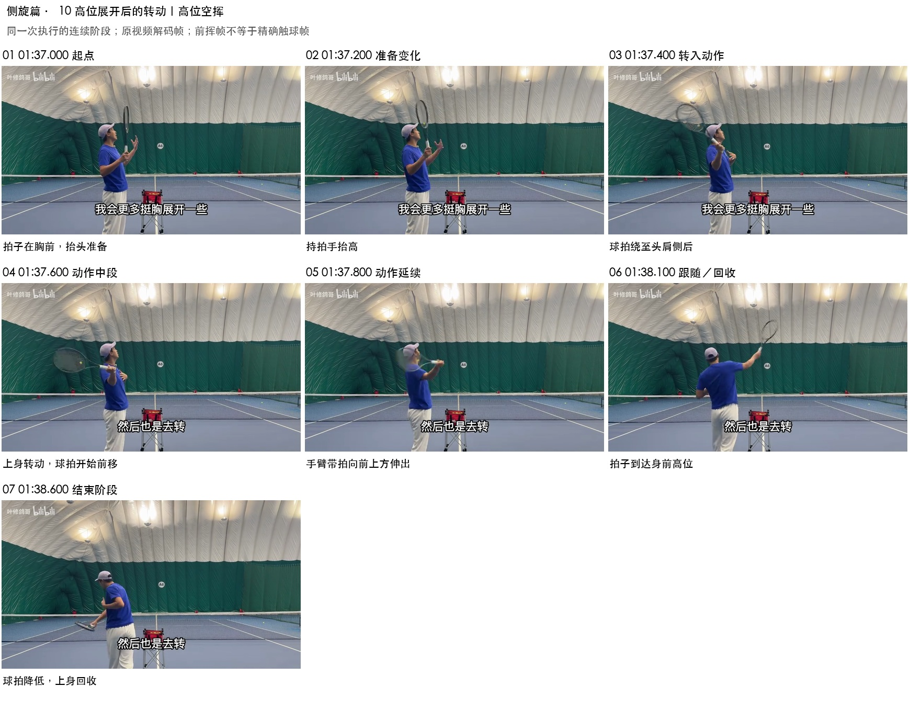
可见过程：拍子在胸前，抬头准备 → 球拍绕至头肩侧后 → 手臂带拍向前上方伸出 → 球拍降低，上身回收。
动作11：加入身体转动的自抛球｜自抛球击球｜01:46.500—01:49.000
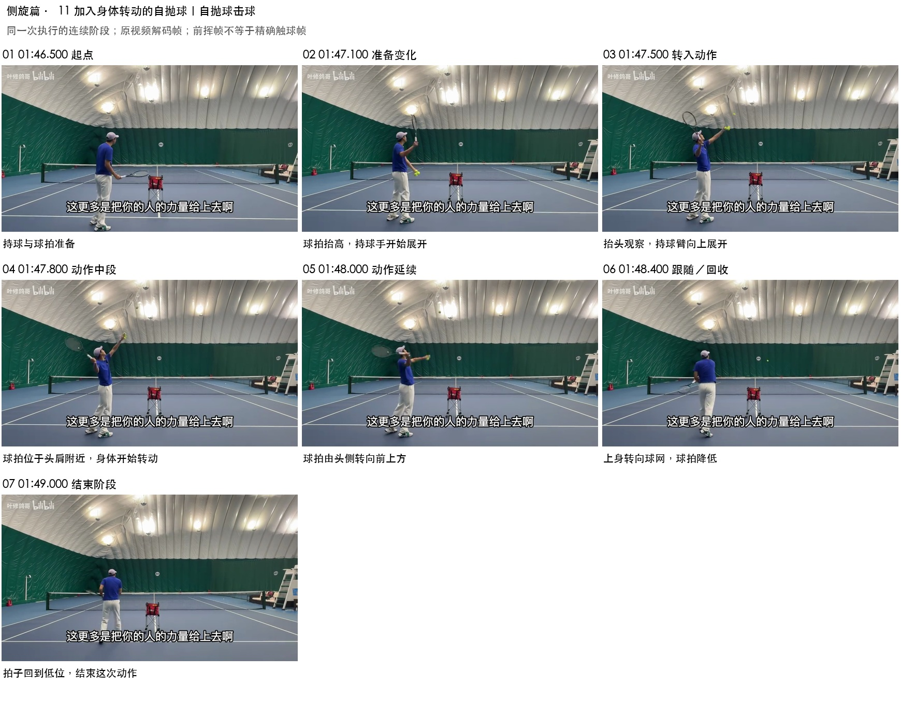
可见过程：持球与球拍准备 → 抬头观察，持球臂向上展开 → 球拍由头侧转向前上方 → 拍子回到低位，结束这次动作。
动作12：强调不求快的第二拍｜自抛球击球｜01:51.400—01:54.100
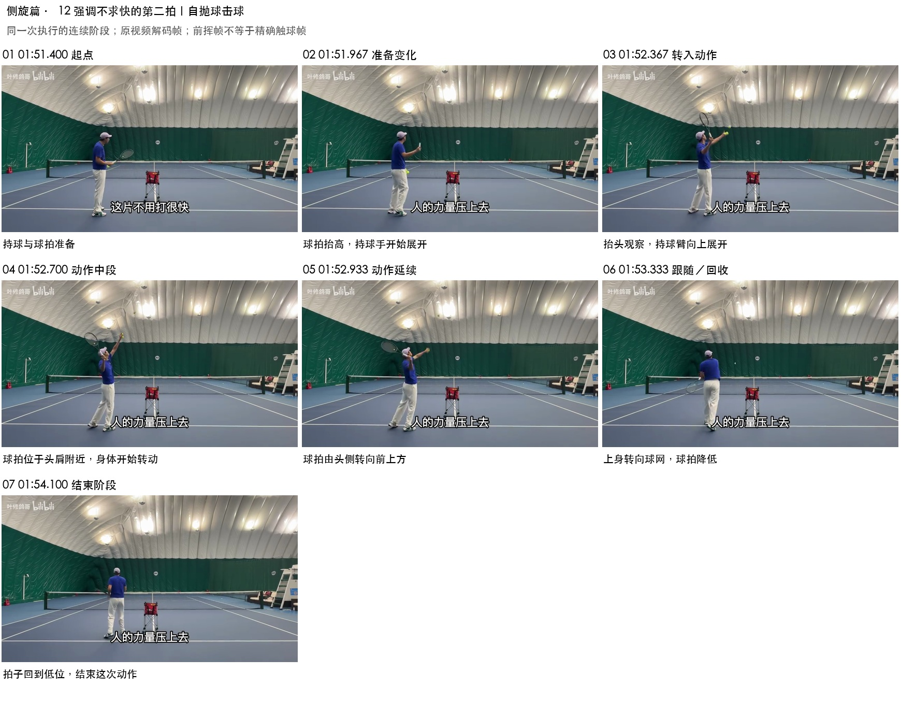
可见过程：持球与球拍准备 → 抬头观察，持球臂向上展开 → 球拍由头侧转向前上方 → 拍子回到低位，结束这次动作。
01:58—02:55：中场斜线与侧身线路的使用
这里用比平时更平的弧线获得更快的出球感觉，但他没有把目标单纯说成提高挥拍速度。接着转到中场位置，介绍斜线和侧身直线等使用场景。
他先做一拍普通侧身带球对比，说明人已经向左移动，再叠加同方向的转动时容易把球带出边线。接着用高位滑板示范他希望的处理，再换到另一侧做斜线示范。他认为这样的球路可提供更大的加力余地，并补充侧身直线、反斜线，以及另一侧直线和斜线都应练到。
“不用担心出边线”“球不会飞”等是讲师在此情境下的强调语，本文保留其教学意图，不改写为必然保证。镜头也不足以逐球核实最终落点和旋转量。
动作13：侧身普通挥拍的现场对比｜带球挥拍对比｜02:21.000—02:24.300
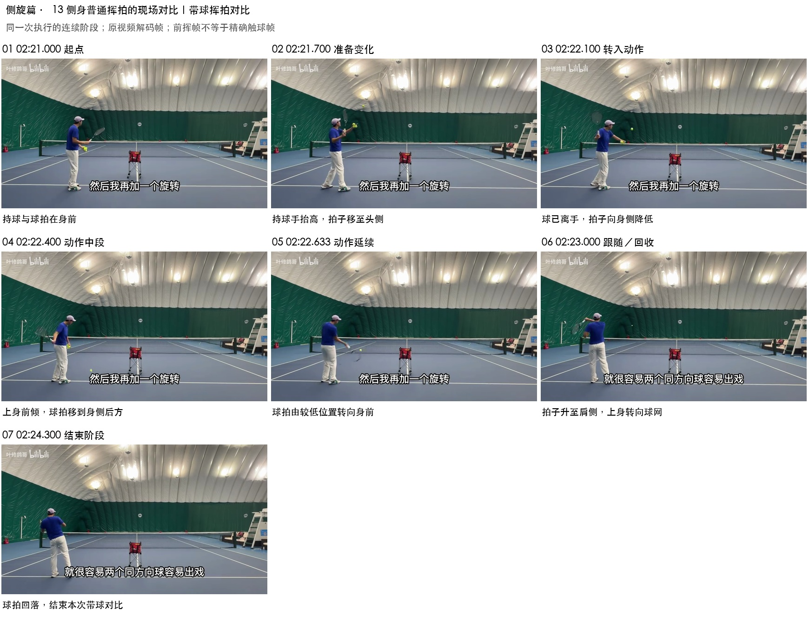
可见过程：持球与球拍在身前 → 球已离手，拍子向身侧降低 → 球拍由较低位置转向身前 → 球拍回落，结束本次带球对比。
动作14：侧身高位滑板｜自抛球击球｜02:26.600—02:28.800
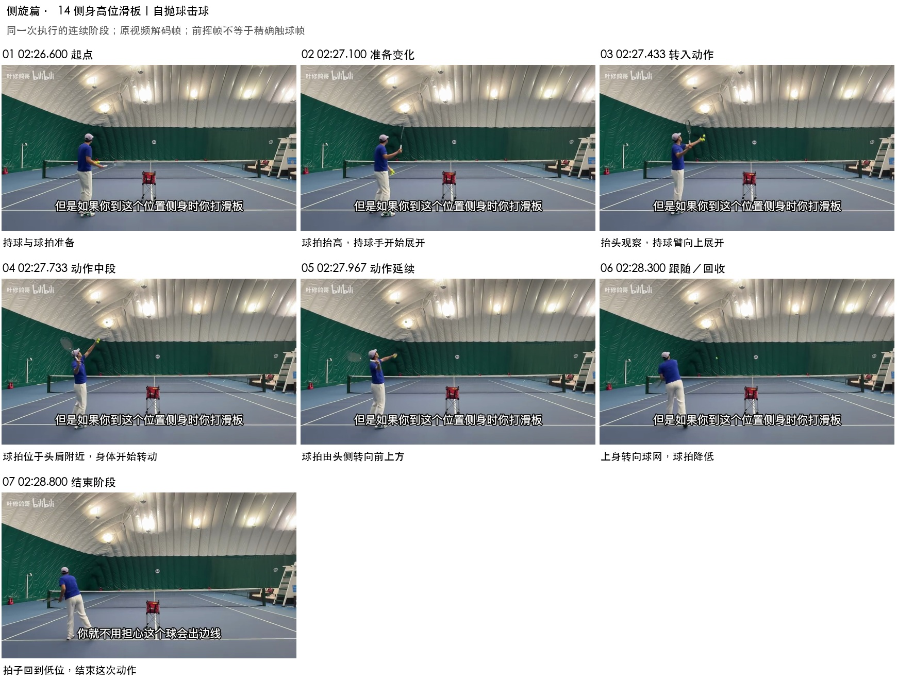
可见过程：持球与球拍准备 → 抬头观察，持球臂向上展开 → 球拍由头侧转向前上方 → 拍子回到低位，结束这次动作。
动作15：侧身加力的接续示范｜自抛球击球｜02:31.867—02:34.000
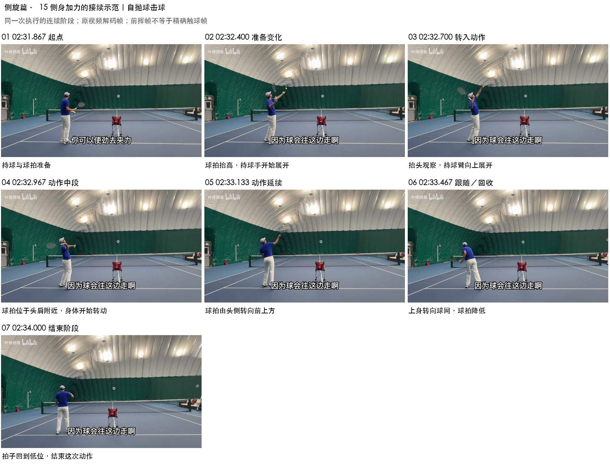
可见过程：持球与球拍准备 → 抬头观察，持球臂向上展开 → 球拍由头侧转向前上方 → 拍子回到低位，结束这次动作。
动作16：另一侧斜线高位球｜自抛球击球｜02:38.100—02:40.500
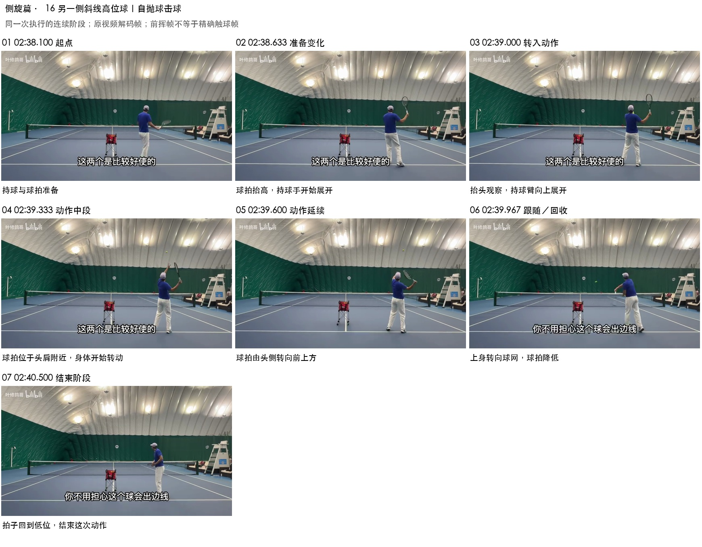
可见过程：持球与球拍准备 → 抬头观察，持球臂向上展开 → 球拍由头侧转向前上方 → 拍子回到低位，结束这次动作。
动作17：斜线第二次高位球｜自抛球击球｜02:41.600—02:43.800
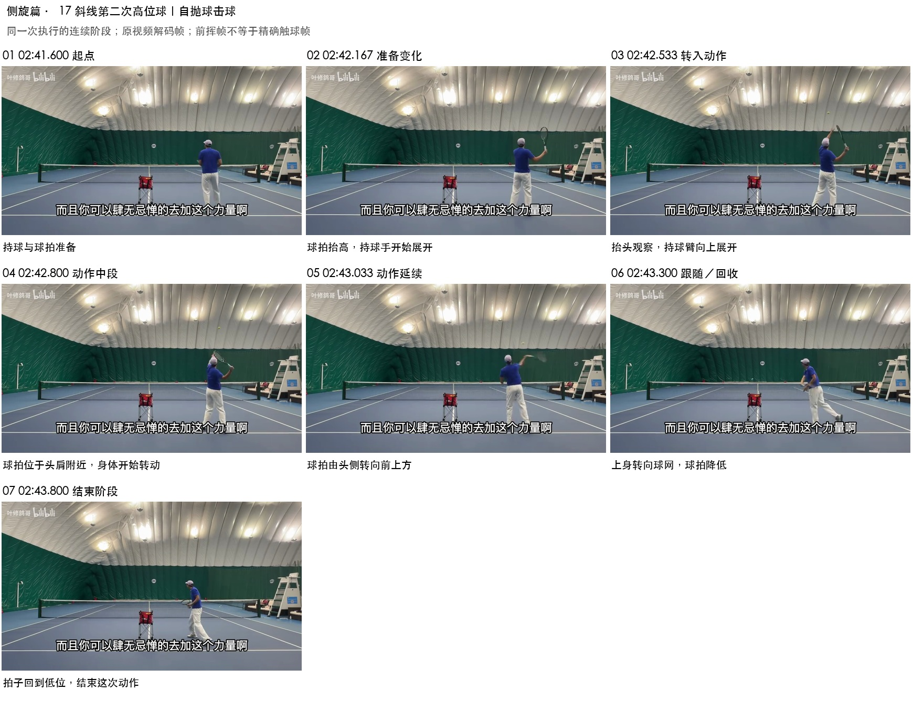
可见过程：持球与球拍准备 → 抬头观察，持球臂向上展开 → 球拍由头侧转向前上方 → 拍子回到低位，结束这次动作。
02:55—03:41：先增加距离，再降低处理高度
中场位置能做出来后，讲师逐渐往后退，依次示范较后的位置、底线和底线后方的高位自抛球。
接下来才是慢慢降低滑板的处理高度，因为高位更容易先练出感觉。03:23—03:28间，他持拍展示高度变化，之后移动回球筐附近；这部分是讲解和换位，不制作动作配图，也不凭持拍下降的手势补造一次低位实球示范。
动作18：后退一段距离后的高位球｜自抛球击球｜03:00.633—03:03.200
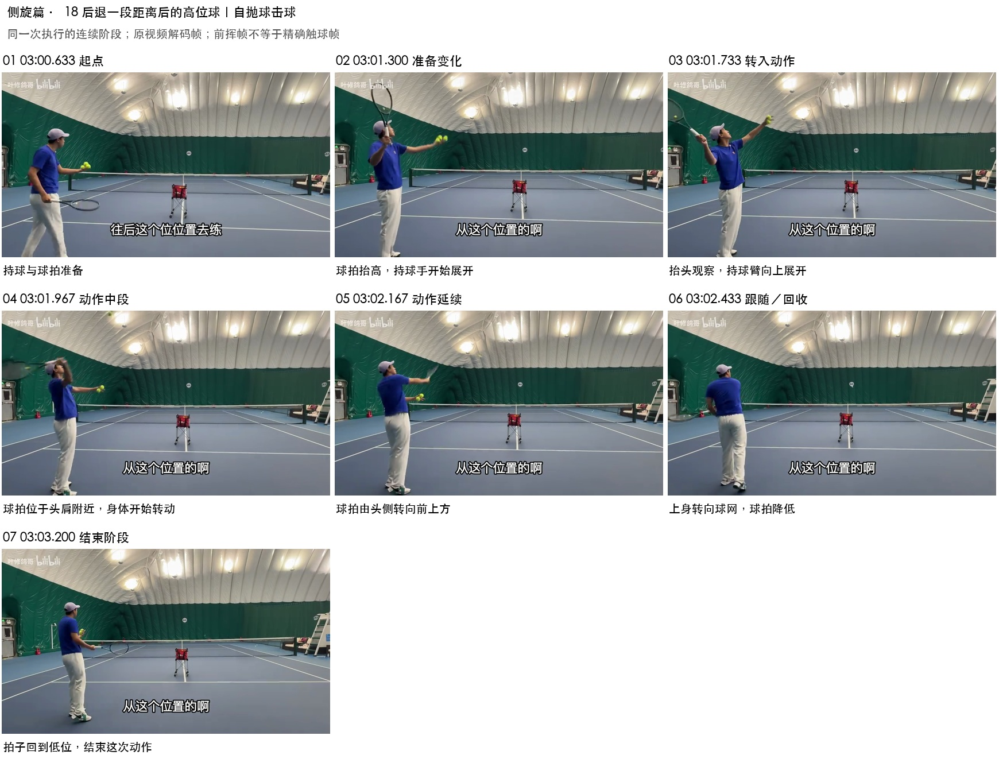
可见过程：持球与球拍准备 → 抬头观察，持球臂向上展开 → 球拍由头侧转向前上方 → 拍子回到低位，结束这次动作。
动作19：底线位置的高位球｜自抛球击球｜03:07.000—03:09.300
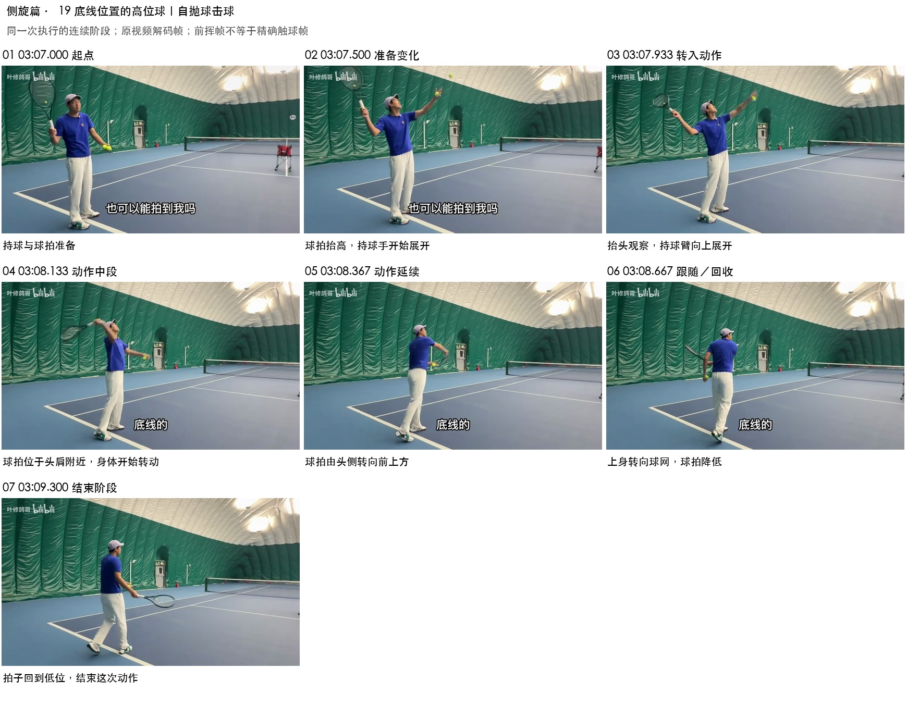
可见过程：持球与球拍准备 → 抬头观察，持球臂向上展开 → 球拍由头侧转向前上方 → 拍子回到低位，结束这次动作。
动作20：底线后位置的高位球｜自抛球击球｜03:10.800—03:13.300
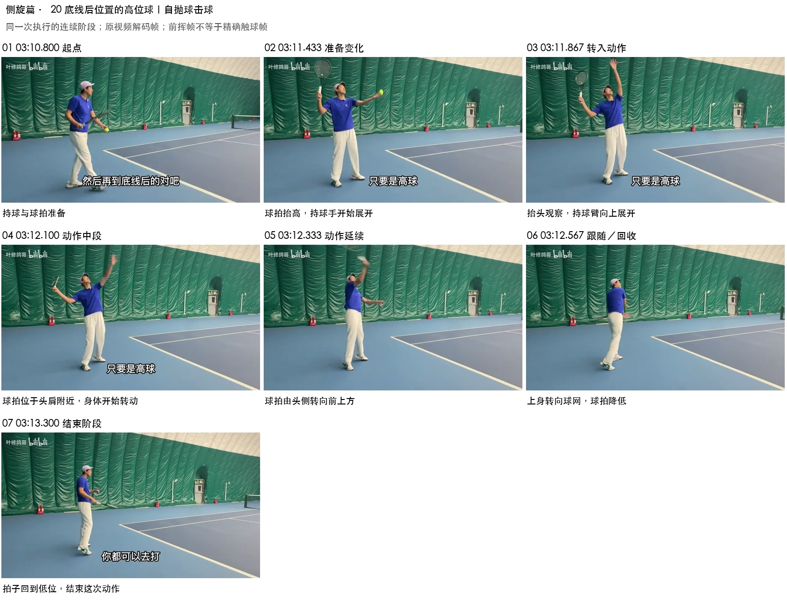
可见过程：持球与球拍准备 → 抬头观察，持球臂向上展开 → 球拍由头侧转向前上方 → 拍子回到低位，结束这次动作。
03:41—04:16：低平处理中的向下提示与练习难度
讲师用发球中“抹球”的情形作类比，说这种处理可能把球带得向前、向远。转回当前击球时，他做了一次高位局部空挥，并提示拍路中可能有一点向下的感觉；随后做一次自抛球击球。
他的表述是，不要一想到向下就认定球一定下网，这种体感仍可能把球送向前。但他也立即补充，这里的比例和体感需要多练，越要把球打得低和平，难度越高，需要积累练习。向下的提示连同这个练习前提一起记录，不能截成所有来球都适用的下压口令。
约 04:10 后转入隔网喂球。
动作21：高位向下方向的局部空挥｜局部空挥｜03:49.000—03:51.967
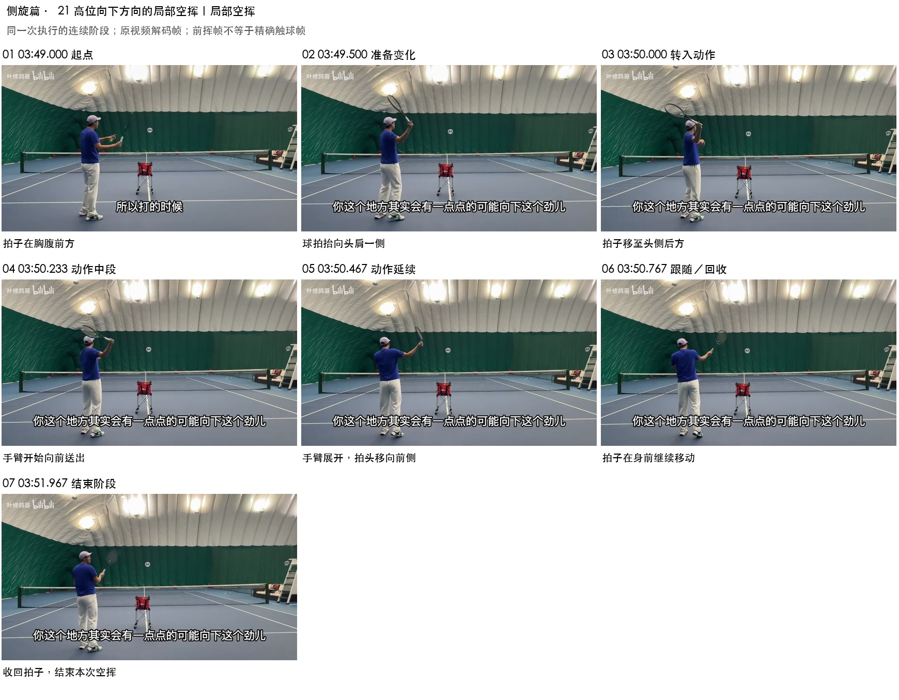
可见过程：拍子在胸腹前方 → 拍子移至头侧后方 → 手臂展开，拍头移向前侧 → 收回拍子，结束本次空挥。
动作22：向下提示后的带球示范｜自抛球击球｜03:54.633—03:57.100
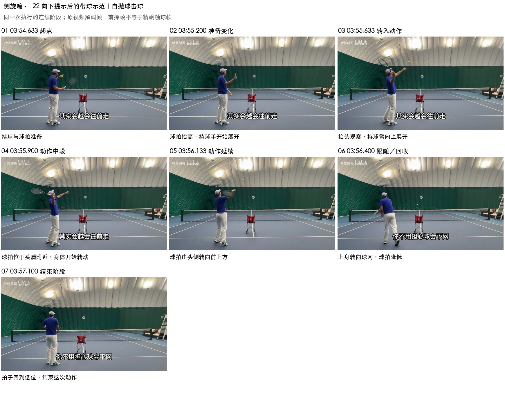
可见过程：持球与球拍准备 → 抬头观察，持球臂向上展开 → 球拍由头侧转向前上方 → 拍子回到低位，结束这次动作。
04:16—04:55：隔网喂球，连续五次独立处理
同伴把球筐移到对面，讲师在近端等球。等待时，他先做局部低位摆拍，再完成一次低位空挥；两次动作分开保存，不算作隔网击球。
随后同伴从远端喂球，讲师连续完成五次处理，每次都从等球与脚下调整开始，抬拍、挥拍后再回到等待位置。第二拍时他侧向移动，人物短暂接近画面边缘，分解图保留原画幅，不补绘被切掉的部位。
动作23：等待喂球时的局部摆拍｜局部空挥｜04:23.000—04:24.233
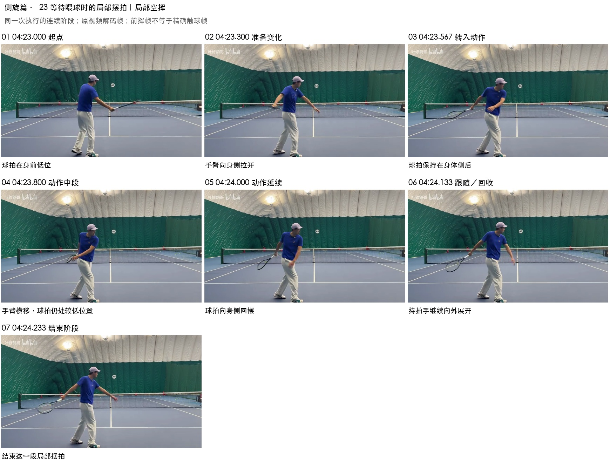
可见过程：球拍在身前低位 → 球拍保持在身体侧后 → 球拍向身侧回摆 → 结束这一段局部摆拍。
动作24：等待喂球时的低位空挥二｜局部空挥｜04:24.267—04:25.600
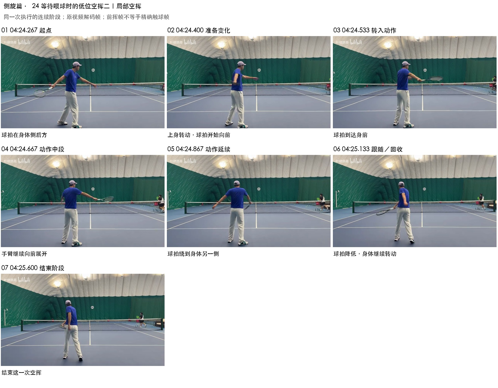
可见过程：球拍在身体侧后方 → 球拍到达身前 → 球拍绕到身体另一侧 → 结束这一次空挥。
动作25：隔网喂球第一拍｜隔网喂球击球｜04:34.000—04:36.900
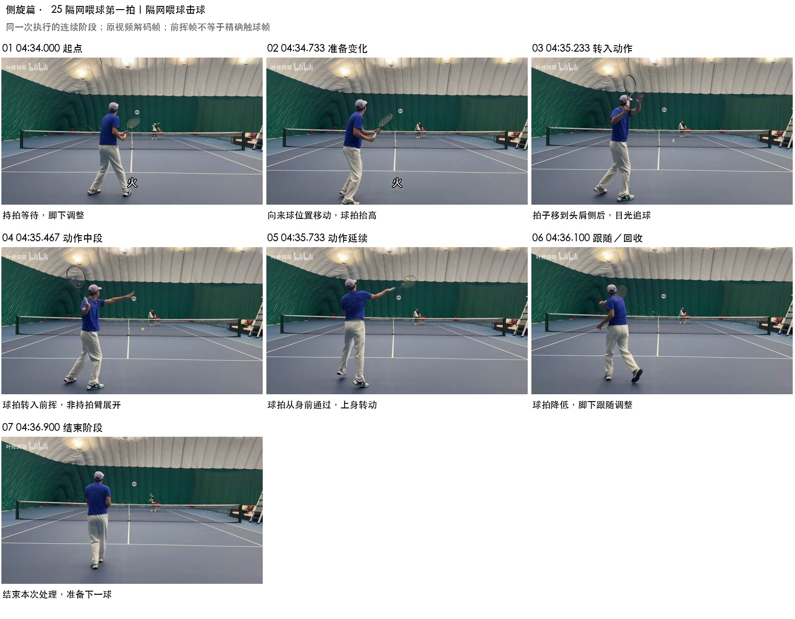
可见过程：持拍等待，脚下调整 → 拍子移到头肩侧后，目光追球 → 球拍从身前通过，上身转动 → 结束本次处理，准备下一球。
动作26：隔网喂球第二拍｜隔网喂球击球｜04:38.167—04:41.200
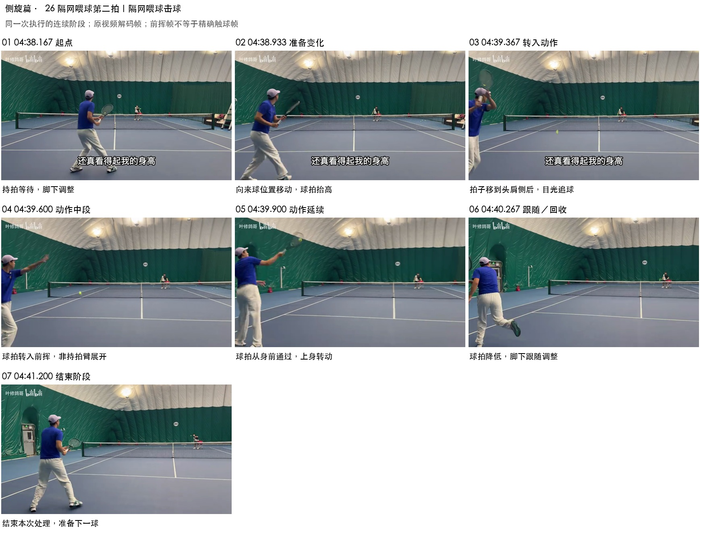
可见过程：持拍等待，脚下调整 → 拍子移到头肩侧后，目光追球 → 球拍从身前通过，上身转动 → 结束本次处理，准备下一球。
动作27：隔网喂球第三拍｜隔网喂球击球｜04:42.167—04:44.800
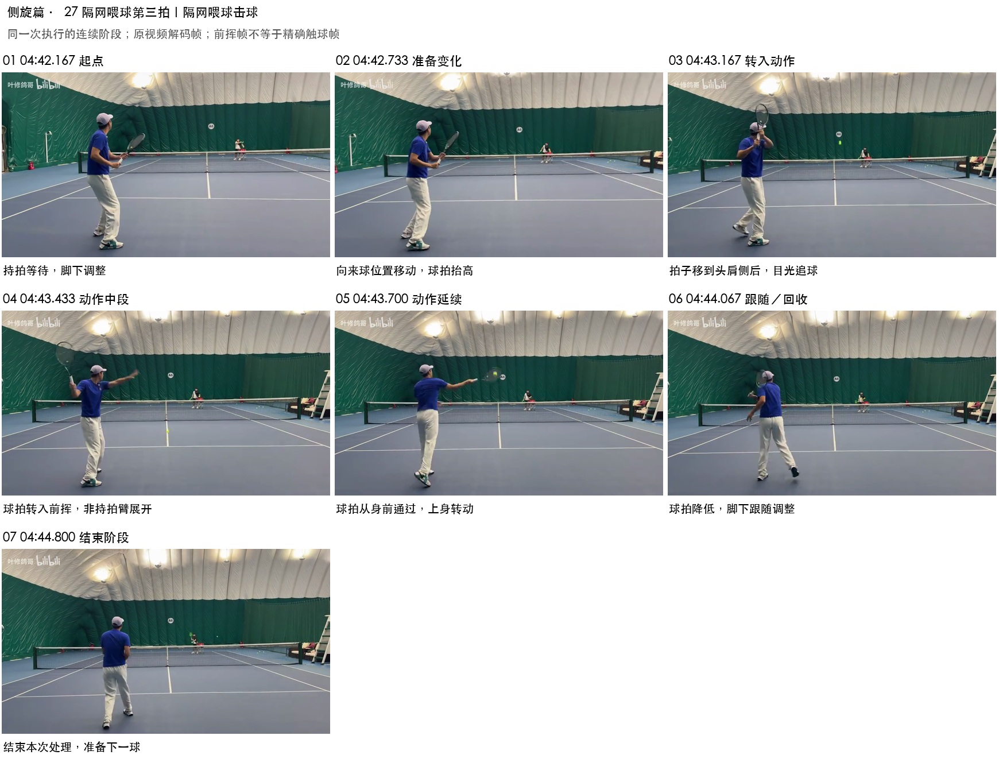
可见过程：持拍等待，脚下调整 → 拍子移到头肩侧后，目光追球 → 球拍从身前通过，上身转动 → 结束本次处理，准备下一球。
动作28：隔网喂球第四拍｜隔网喂球击球｜04:46.000—04:48.700
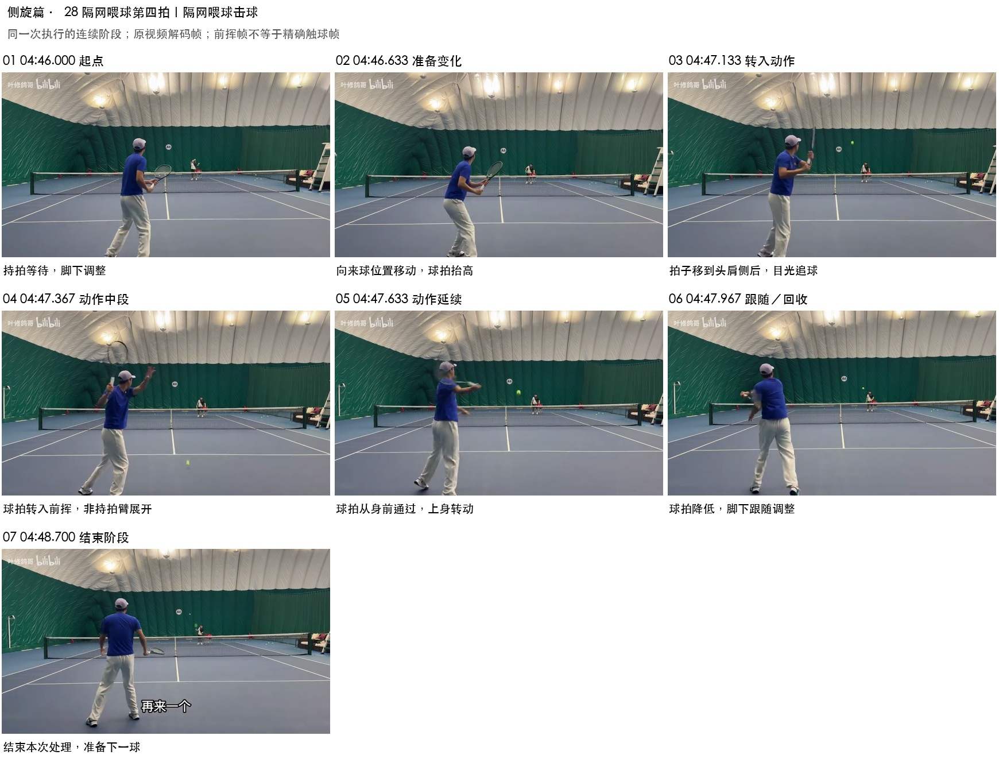
可见过程：持拍等待，脚下调整 → 拍子移到头肩侧后，目光追球 → 球拍从身前通过，上身转动 → 结束本次处理，准备下一球。
动作29：低来球的最后一次处理｜隔网喂球击球：现场对比｜04:50.500—04:53.133
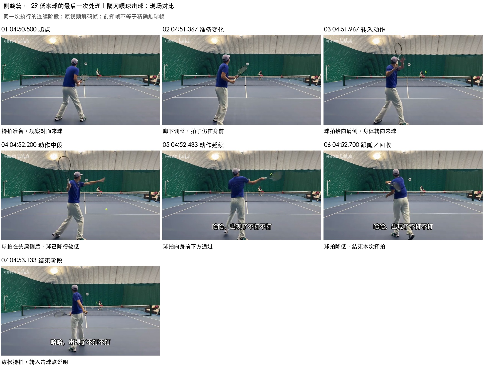
可见过程：持拍准备，观察对面来球 → 球拍抬向肩侧，身体转向来球 → 球拍向身前下方通过 → 放松持拍，转入击球点说明。
04:55—05:35：击球高度与上升阶段的现场补充
讲师接着说，这种高位处理通常把击球点选在头部附近。他区分了两种情形：一是球的反弹最高点刚好到这个位置；二是在球继续上升、还没越过头部高度前抢先处理。因为来球不可能每次都恰好弹到合适高度，他更强调第二种，即主动抢上升阶段。
他的解释是，球向上时较容易把这拍处理得实；若一直等到下落，再叠加向下的拍路，就容易下网，也不好加上力量。他用球拍在身前划出局部路径辅助说明，没有再给出一拍新的实球示范。随后请同伴把球筐拿回来，转入其他技术的联系。
05:35—06:02：一篮球练习中的左右处理
讲师把侧旋联系到常见的一篮球练习。他认为，要把球主动送向前，很多处理并非只有正前方的推送，还需要加入左右方向的拍路；前面所讲的大臂外旋练习，可以继续接到这一段处理。
这段包含一次自放球击球、一次局部低位空挥，以及后续三次自放球击球。虽然讲解连续，图片按每次执行分别拆开。他把左右处理解释为增加向前力量与球质、同时帮助控制的方式；这仍是课程内部解释，没有另行测量拍面方向、球速或旋转。
动作30：一篮球练习中的左右处理一｜自放球击球｜05:42.867—05:44.533
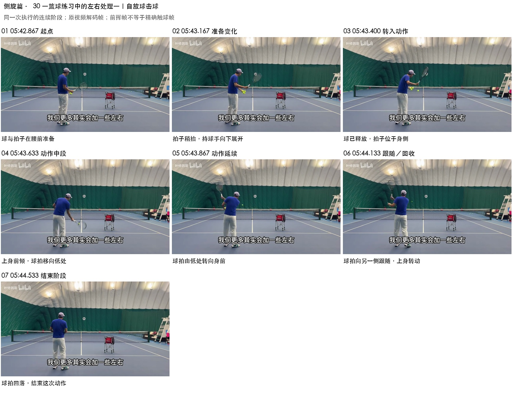
可见过程：球与拍子在腰前准备 → 球已释放，拍子位于身侧 → 球拍由低处转向身前 → 球拍回落，结束这次动作。
动作31：左右路径的低位空挥｜局部空挥｜05:44.567—05:45.567
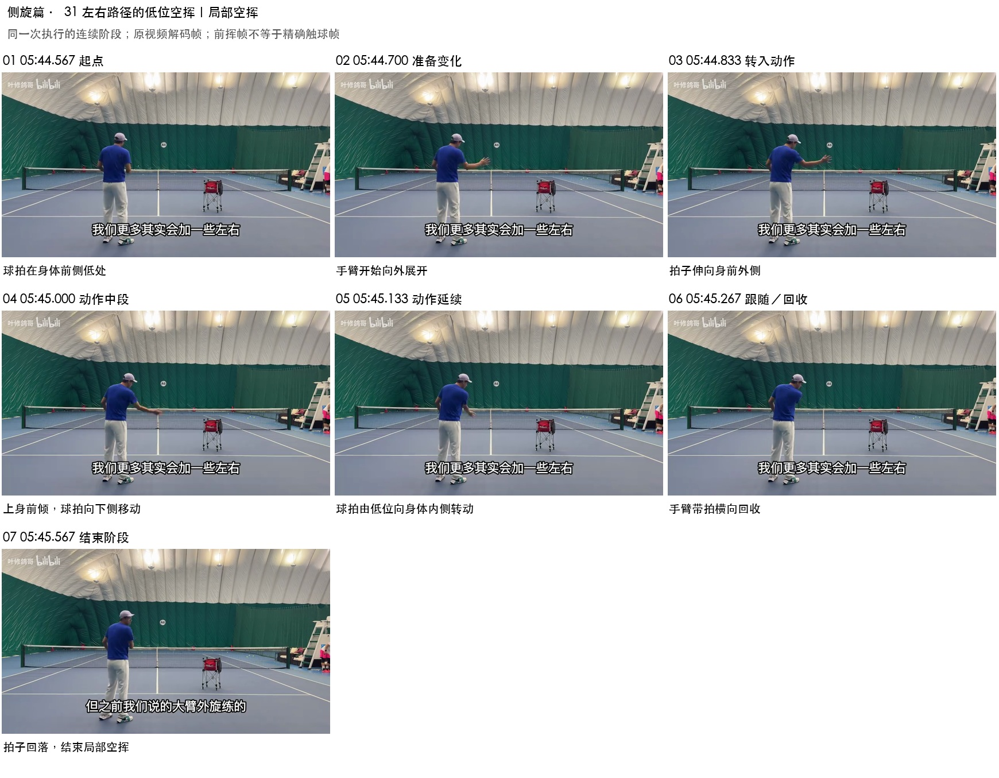
可见过程：球拍在身体前侧低处 → 拍子伸向身前外侧 → 球拍由低位向身体内侧转动 → 拍子回落，结束局部空挥。
动作32：大臂外旋衔接的示范一｜自放球击球｜05:46.867—05:48.633
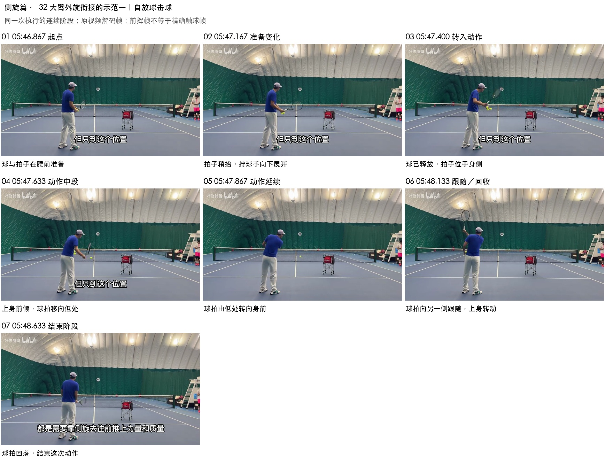
可见过程：球与拍子在腰前准备 → 球已释放，拍子位于身侧 → 球拍由低处转向身前 → 球拍回落，结束这次动作。
动作33：大臂外旋衔接的示范二｜自放球击球｜05:48.867—05:50.300
可见过程：球与拍子在腰前准备 → 球拍由身侧转向低处 → 球拍升至身体另一侧 → 结束这一拍，尚未开始下一次放球。
动作34：接续的第三次低位带球示范｜自放球击球｜05:50.400—05:51.833
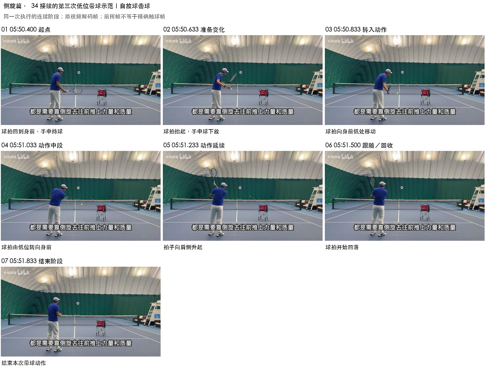
可见过程：球拍回到身前，手中持球 → 球拍向身前低处移动 → 拍子向肩侧升起 → 结束本次带球动作。
06:02—06:35：放小球，区分卸力、向下割与加入左右
讲师先谈快来球的卸力，做一次短促向下切的局部空挥。他认为单靠这种处理很难；若来球慢一些，还需要自己把短球送过网，就不能只是一味向下割。
接着他用一次自放球演示“只割”的对比，认为这样球的飞行可能太慢。随后两次自放球展示他希望加入侧旋的处理：既让球向前，又保留控制。他也提醒这很容易不知不觉变成直接推球，所以再次做局部拍路空挥，强调不能只剩推或向下切。短球的两种处理是讲师示范目标的区别，画面本身不足以给每一球的旋转轴或飞行速度定量。
动作35：快来球卸力切的局部示范｜局部空挥｜06:06.233—06:07.000
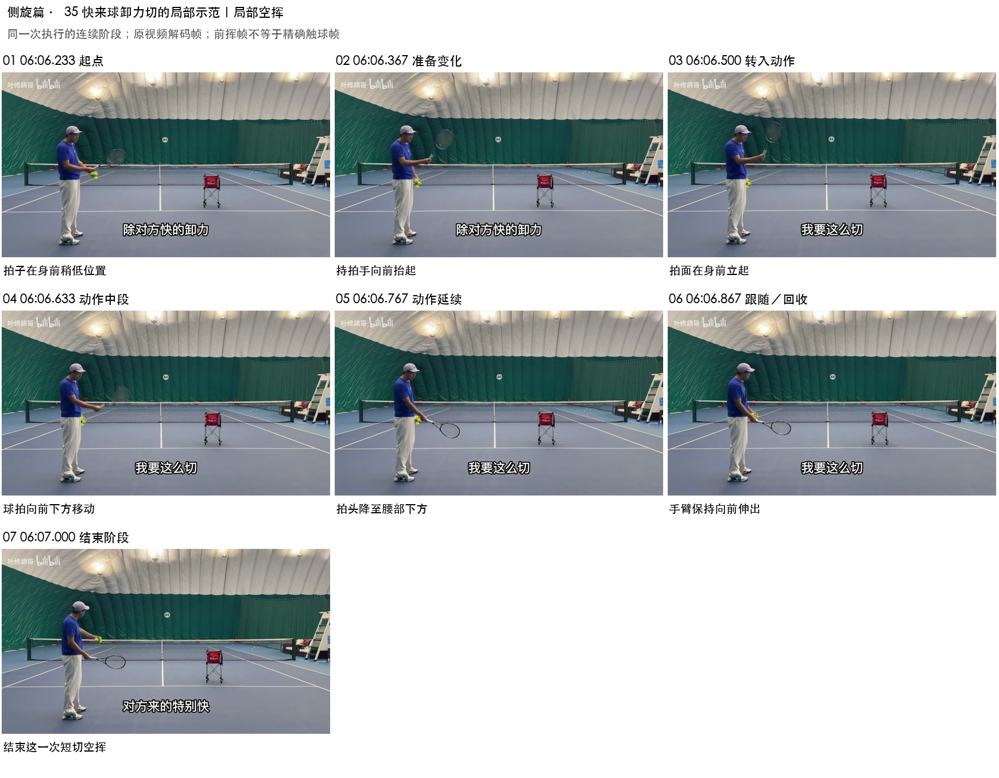
可见过程：拍子在身前稍低位置 → 拍面在身前立起 → 拍头降至腰部下方 → 结束这一次短切空挥。
动作36：只向下割的短球反例｜自放球击球：对比示范｜06:13.300—06:15.200
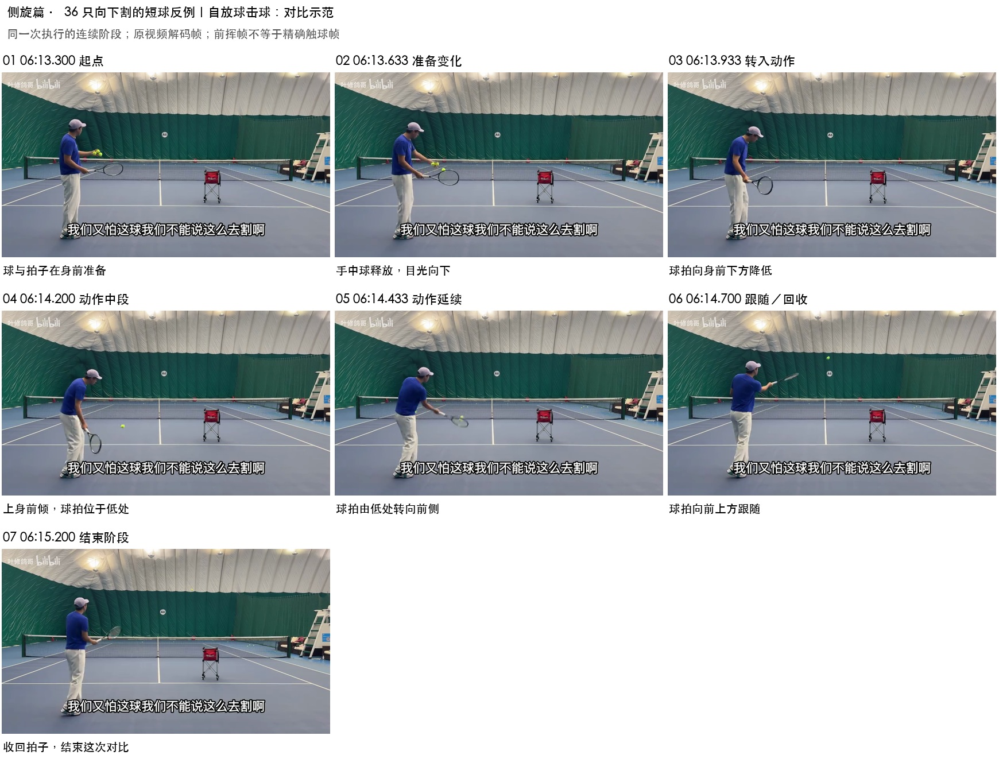
可见过程：球与拍子在身前准备 → 球拍向身前下方降低 → 球拍由低处转向前侧 → 收回拍子，结束这次对比。
动作37：加入左右的放小球一｜自放球击球｜06:20.100—06:22.100
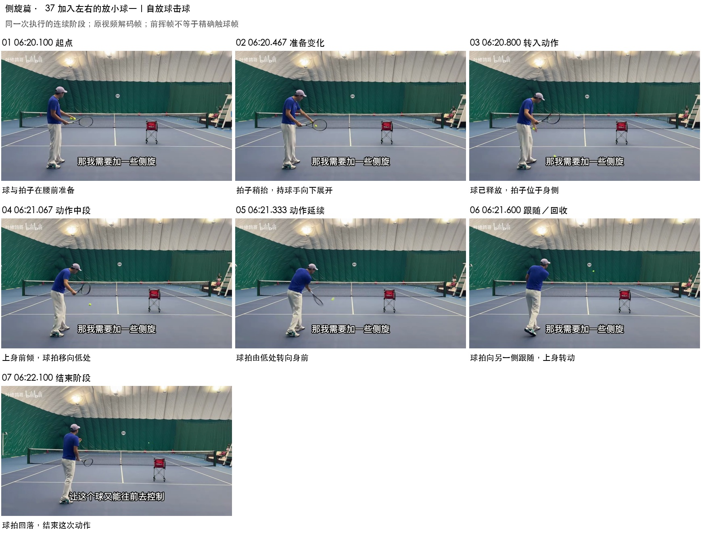
可见过程：球与拍子在腰前准备 → 球已释放，拍子位于身侧 → 球拍由低处转向身前 → 球拍回落，结束这次动作。
动作38：加入左右的放小球二｜自放球击球｜06:25.933—06:28.233
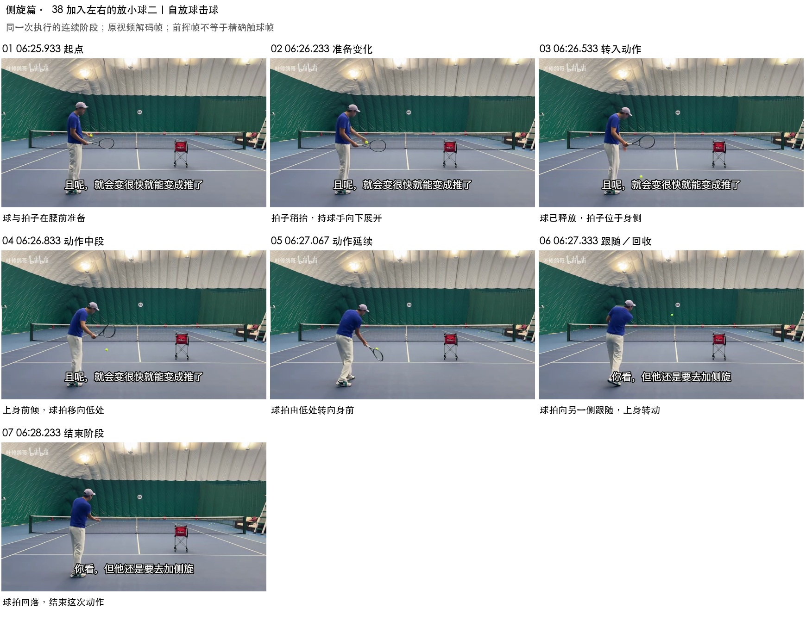
可见过程：球与拍子在腰前准备 → 球已释放，拍子位于身侧 → 球拍由低处转向身前 → 球拍回落，结束这次动作。
动作39：短球左右路径的局部空挥｜局部空挥｜06:32.867—06:34.233
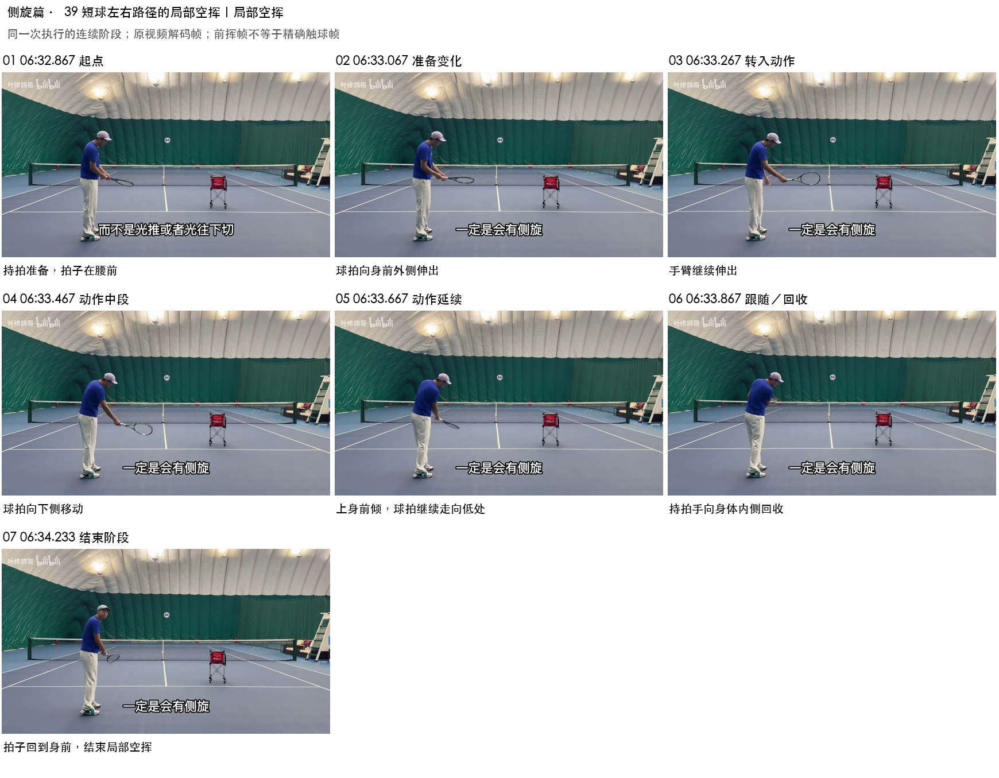
可见过程：持拍准备，拍子在腰前 → 手臂继续伸出 → 上身前倾，球拍继续走向低处 → 拍子回到身前，结束局部空挥。
06:35—07:01：发球与反手切削也有类似联系
讲师把话题扩展到发球，做了一次高位局部拍路空挥；此处没有完整发球抛球、起跳和落地，不补写成完整侧旋发球。随后他说，侧旋在实际使用中的范围比初学者可能想到的更多，包括反手切削。
他先自放球做一次较短的反手向前推送，用作借力式处理的对比；再自放球，抬拍后向身前下方挥出，持拍臂继续向侧前方、侧上方展开。他把第二次说明为主动加上左右方向，以得到向前的处理。两次反手各自拆开，不将第一次的准备接到第二次的随挥。
动作40：发球侧旋路径的局部空挥｜发球局部空挥：非完整发球｜06:35.333—06:37.900
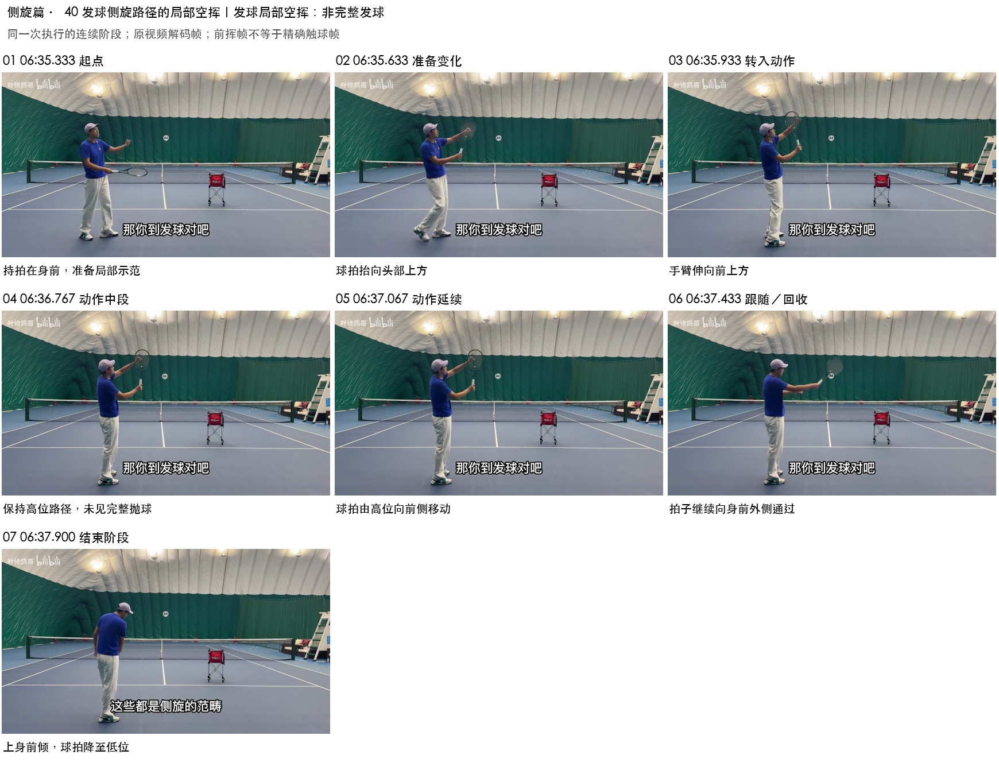
可见过程：持拍在身前，准备局部示范 → 手臂伸向前上方 → 球拍由高位向前侧移动 → 上身前倾，球拍降至低位。
动作41：反手向前推的借力对比｜自放球反手击球｜06:50.000—06:51.967
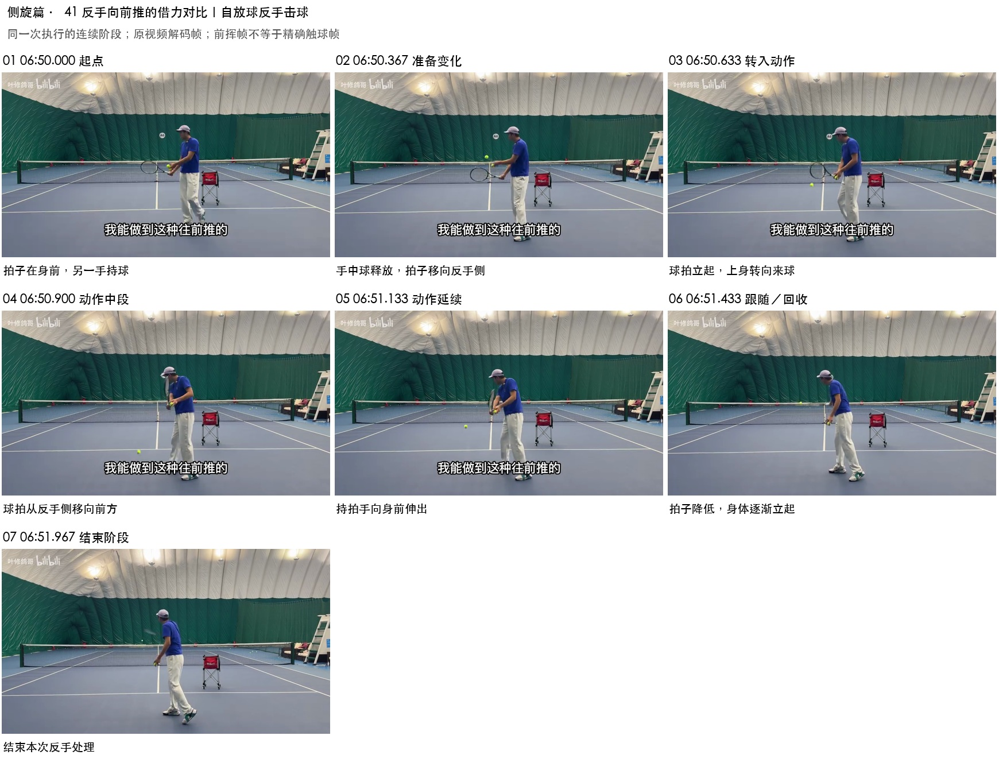
可见过程：拍子在身前，另一手持球 → 球拍立起，上身转向来球 → 持拍手向身前伸出 → 结束本次反手处理。
动作42：反手切削加入左右｜自放球反手击球｜06:55.867—06:58.100
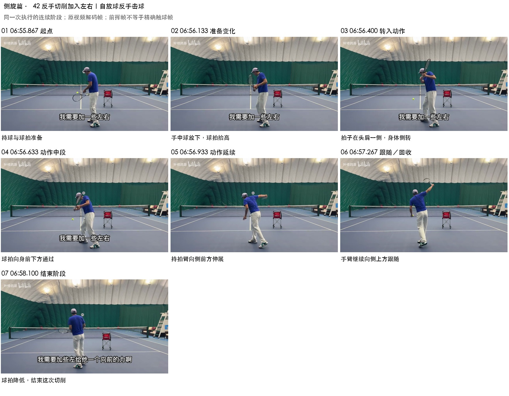
可见过程：持球与球拍准备 → 拍子在头肩一侧，身体侧转 → 持拍臂向侧前方伸展 → 球拍降低，结束这次切削。
07:01—07:12：把不同技术中的相似处理串起来
结尾回到开场的主题：讲师希望学员把前面各技术融会贯通，理解这些处理之间的共同点。如果之后发现还有遗漏，可以再回头补充。课程到此结束，没有展示学员后续练习或训练效果。